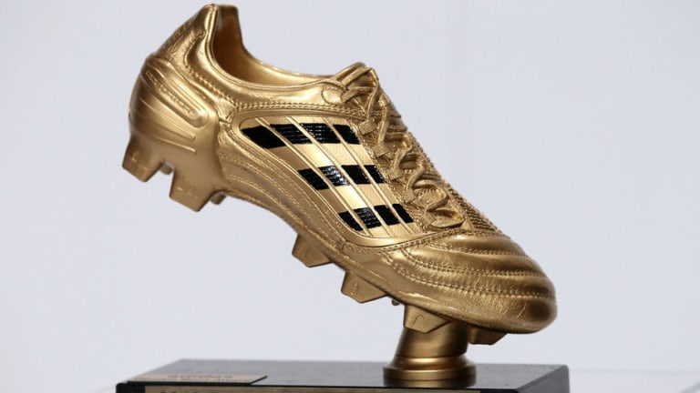

The World Cup history is very big and exciting. Many records have been set and many teams have won the greatest title in football ever. Let's take a look at the megical story of the previous years.
The first World Cup took place in 1930. Before the first World Cup came, the Olympic Games were the most important international football tournament, although there were tournaments before. The first official recognition by the International Olympic Committee took place through the inclusion of football in the Olympic sports at the Games in 1900. The fathers of the World Cup are the then FIFA President, Jules Rimet, and the President of the French Football Association, Henri Delaunay. The official decision to host a "World Cup" was made on 28 May 1928 at the FIFA Congress in Amsterdam. The first World Cup was attended by 13 nations: Uruguay, Argentina, Belgium, Bolivia, Brazil, Chile, France, Yugoslavia, Mexico, Paraguay, Peru, Romania and the USA. Uruguay was the first land in 1930, who won the WC-Finals.
a.= after / E.= Extension / P.= Penalty kick
| WC-Finals | World champion | Final-result | Vice World champion |
|---|---|---|---|
| WC 2018 in Russia | France | 4:2 | Croatia |
| WC 2014 in Brazil | Germany | 1:0 a. E. | Argentina |
| WC 2010 in South Africa | Spain | 1:0 a. E. | Niederlande |
| WC 2006 in Germany | Italy | 5:3 a. P. | Frankreich |
| WC 2002 in Japan and South Korea | Brazil | 2:0 | Germany |
| WC 1998 in France | France | 3:0 | Brazil |
| WC 1994 in USA | Brazil | 3:2 a. P. | Italy |
| WC 1990 in Italy | Germany | 1:0 | Argentina |
One of the most coveted trophies in the world of football is the "golden shoe" that the top scorer of the World Cup is allowed to take home. Here are the World Cup scorers from 1990 to today.
| Year | WC-Top scorer | Tore |
|---|---|---|
| 2018 | Harry Kane | 6 |
| 2014 | James Rodriguez | 6 |
| 2010 | Thomas Müller | 5 |
| 2006 | Miroslav Klose | 6 |
| 2002 | Ronaldo | 8 |
| 1998 | Davor Suker | 6 |
| 1994 | Salenko/Stoichkov | 6 |
| 1990 | Salvatore Schillaci | 6 |
A record participant in the history of the World Cup is Lothar Matthäus with the most participations in a World Cup. Another record has been set by Just Fontaine of France
with the most goals in a World Cup and one of the last important records is that Brazil, as of 2022, has won the most World Cup with 5 titles.